| |
Egypt
& the Ancient Near East
Subject
Guide to Library Resources at LBCC
|
 |
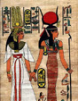
Isis &
Nefertiti |
This guide was created to assist you in locating available
information on Egypt and Ancient Near East sources at the
Long Beach City College Library and through the Internet.
The term "Near East" generally refers to the ancient
civilizations from today's North Africa and Sudan, sweeping
eastward from the boundaries of the Mediterranean Sea across
Asia to Persia and northward to modern Turkey. This area is
often considered the cradle of civilization, producing some
of the earliest documented traces of written language, and
codified law. It boasts the eventual development of Western
religion, and the art and architecture of the Ancient Near
East is magnificent. Some of the civilizations of the ancient
Near East include:
|
Akkadia
Amorites
(Amurru)
Anatolia
Arabia
Deserta (Aribi)
Aramaea
Asshur
(Assyria)
Babylonia
Canaan
Carthage
Chaldea
(Neo-Babylonia)
Cush/Nubia
Dilmun
Egypt
Elam
Hittites
|
Israel
& Judea (Hebrews)
Kassites
Media
Mesopotamia
Nabataea
(Arabia Petraea)
Parthia
Persia
Philistines
(Palestinians)
Phoenicia
Sabaeans
(Sheba)
Semites
Sumeria
Syria
(Ebla, Ugarit)
Yemen
(Arabia Felix)
|
|
You will find
relevant information on Egypt and the Ancient Near East under
many disciplines including:
|
• Anthropology
• Archaeology
• Architecture
• Art
• Art History
• Atlases
• Epigraphy
• Historical Geography
|
•
History
• Language
• Linguistics
• Literature
• Names of Civilizations
• Numismatics
• Religion
• Women's Studies
|
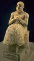
Mari
Alabaster Figure
|
|
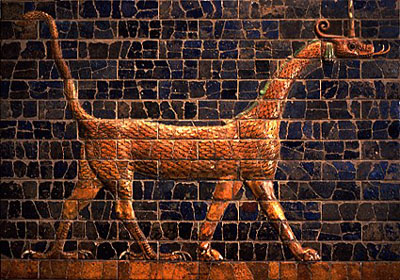
Dragon
of Marduk - Babylon - Ishtar Gate
|
A
good place to start a paper is to read a little general literature
about the field (encyclopedia, internet article) and look up
basic terms that are unfamiliar to you. The Encyclopedia
Britannica (in print or online)
is an excellent source of information on topics about the Ancient
Near East.
The
next step would be to look for books which cover or touch
upon your specific topic. Use the chapter headings and indexes
of books that seem relevant to zero in on your topic.
Finally,
look for journal articles focused on your specific area of
inquiry for more in-depth and recent coverage.
|
When
unable to find answers to your questions in these resources, the
internet and other reference books will often give you new leads
to the answers. Finally, don't forget the wealth of information
contained in videos. Research about these ancient topics is particularly
aided by information and visual material documented in videos.
FIND
REFERENCE TOOLS
Reference
tools such as indexes, directories, bibliographies, guides,
encyclopedias and atlases are generally found in a reference
area where many people can refer to general information.
Items found in reference areas cannot be checked out of
the library.
Occasionally other copies of reference-type items can
be found in the circulating collection for you to check
out.
|
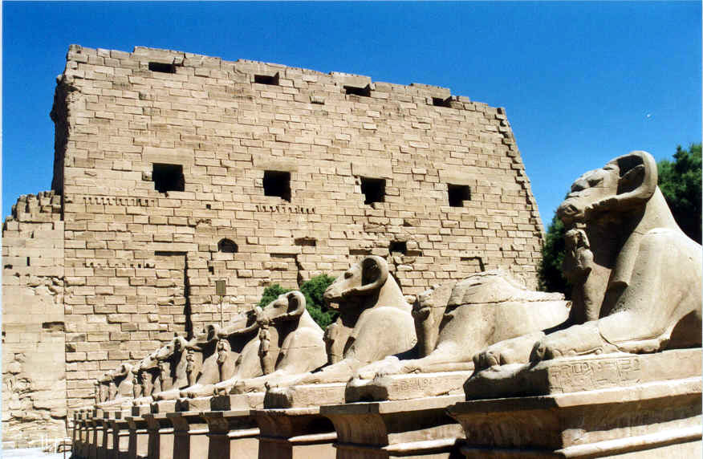
Sphinxes
at the Temple of Karnak |
|
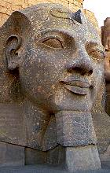
Rameses
II
|
To
find articles and books on various aspects of the Ancient Near
East, the main printed indexes in the Reference Area to use
for extensive research are:
Humanities
index.
Location: LAC Index Table (Reference
Room) Call Number: AI3 .H85
Social sciences index.
Location: LAC Index Table (Reference
Room) Call Number: AI3 .S62
(Previous volumes known as Social Sciences & Humanities
Index AI3 .R49)
|
Winick,
Charles. Dictionary of anthropology. 1970 [c1956]
Location: PCC Reference Room Collection
Call Number: GN11 .W5 1970
Location: LAC Reference Room Collection
Call Number: GN11 .W5
Smithsonian
timelines of the ancient world. 1993.
Location: LAC Reference Room Collection.
Call Number: D54.5 .S65 1993
The
Oxford encyclopedia of ancient Egypt. 2001.
Location: LAC Reference Room Collection.
Call Number: DT58 .O94 2001
Encyclopedia of anthropology / David E. Hunter, Phillip
Whitten. c1976.
Location: LAC Reference Room Collection
Call
Number: GN11 .E52
The
Concise encyclopedia of archaeology / edited by Leonard
Cottrell. 1971.
Location: LAC Reference Room Collection
Call Number: CC70 .C6 1971
The
atlas of the ancient world : charting the great civilizations
of the past. 1992.
Location: LAC Reference Room Collection.
Call Number: G1033 .O5 1992
Location: PCC Reference Room Collection.
Call Number: G1033 .O5 1992
Atlas
of ancient archaeology, edited by Jacquetta Hawkes. 1974
Location: LAC Reference Room Collection.
Call Number: GN739 .H38 1974
Archaeological
atlas of the world / David and Ruth Whitehouse . 1975.
Location: LAC Reference Room Collection.
Call Number: G1046.E15 W5 1975
|
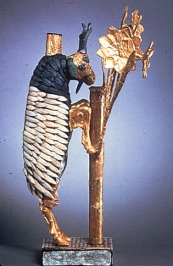
Goat in
the Thicket -- Ur
Nile
River Goddess
4000 B.C.
|
FIND
BOOKS IN THE CATALOG
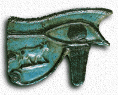
Eye of
Horus |
Books
can be located by searching Voyager,
the Library's online catalog. Use the term of a culture
or area, along with the terms ancient, near east, religion,
civilization, archaeology, culture, civilization, epigraphy,
inscriptions, numismatics, archaeology, architecture, history,
mythology, art, art history, art, language, literature,
semitic, atlases, historical geography, or law. Combine
these terms in a keyword search for the best results, following
subject links in desired records to find more similar records.
Try
a keyword search and look at the subject headings assigned
to some of your hits, then link to those subject headings
for more records. If you don't find records in the LBCC
Library for what you need, try searching online
databases for articles and search other
libraries for books. You may use Interlibrary
Loan to request books not found at
LBCC. Here are some suggested Subject Headings or Keywords
to search in Voyager:
|
|
To
find Electronic books in Voyager
which can be read online from home, try a search using general
terms and adding a Quick Limit of E-Books. You will need
to view the record for the book to click on the link to
the website that hosts the book. To view from home you will
need passwords which can be found with the passwords for
online databases available from the librarians.
|
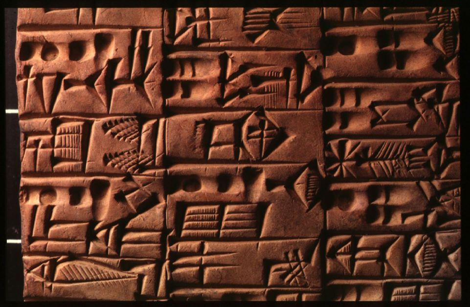
Cuneiform
|
You can also
browse the shelves by the Library of Congress Classification letters
assigned to books in these subject areas:
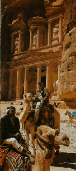
Nabataean
Petra
|
Find
these call numbers on Stack Level 1, Sub-basement of LAC:
B-BH
Philosophy
BL -- Religions of the World, Mythology, Semitic Religions
BM -- Judaism
BP -- Islam
BR -- Christianity
CC -- Archaeology
CJ -- Numismatics
CN -- Insriptions, Epigraphy
DS -- History of Asia, including some Art
DT -- History of Africa, including some Art
Find
these call numbers on Stack Level 2, Basement of LAC:
G -- Historical Geography, Atlases
GN -- Anthropology
GR -- Folklore
GT -- Manners and Customs
Find
these call numbers on Stack Level 3, First Floor of LAC:
K
-- Law
N -- Visual Arts
NA -- Architecture
NK -- Decorative Arts
Find
these call numbers on Stack Level 4, the Mezzanine of LAC:
P
-- Linguistics
PJ -- Oriental Languages & Literatures
PK -- Indo-Iranian Languages & Literatures
|
FIND
VIDEOS
|
Some
videos may be found in Voyager,
the online catalog, to be checked out. First select a Quick
Limit of Videorecordings, then do a keyword search
on the the name of a people, country or a civilization.
You
may also view videos inhouse from the Instructional Media
Collection. Search Medianet
for a discipline such as history or art, and/or the names
of a civilization or a country such as Mesopotamia.
|
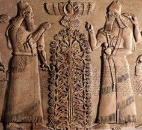
Zoroastrian
Persian Relief
|
FIND
ARTICLES
A few periodical
titles currently held by the LAC library in hard copy and containing
information on the ancient Near East include:
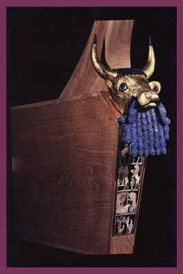
Bull-Faced
Lyre from Mesopotamia |
Archaeology
Cultural Anthropology
Journal of Anthropological Research
Journal of Near Eastern Studies (microfilm)
Journal of the Royal Anthropological Institute
National Geographic
Smithsonian
|
The Library
has a subscription to several online
databases containing information on Near East research.
These databases are particularly helpful in finding information
as many journals can be searched simultaneously by the keywords
you select. The full-text is then most often available online
for printing or sending to your email account. Some of these databases
include:
Encyclopaedia
Britannica
Facts on File On-Line
Proquest
SIRS Renaissance
SIRS
Researcher
|
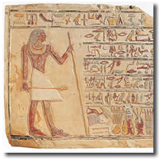
Egyptian
Hieroglyphics |
Only current
faculty, students or staff may use these databases. Ask for passwords
at the Reference Desk at either Library. The Librarians can instruct
you on using these article databases. There is a free
workshop offered for learning the ins and outs
of online database searching.
FIND
INTERNET RESOURCES
Many good
resources can be found on the Internet for current research, basic
information, and indexes to more resources. You will also come
across many sites produced by school classes and others that will
not carry the authority you might be looking for. So review the
origin of the information carefully. A few good sites to visit
include:
WRITING/RESEARCH
ASSISTANCE
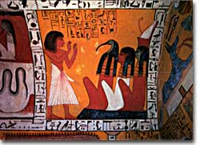
Egyptian
Instructor |
Finally,
while you are writing your paper, there is an online subject
guide, Writing
Tips, with links to online help for organizing and
formulating your paper, and finding online dictionaries
and citation tools.
There
is also a Writing Center at both campuses to help you
with the fundamentals of your paper, for information call
the Writing Center at LAC (562)
938-4520 and at PCC:
(562) 938-3991.
|
Increase Your Research Skills!
Enroll for Lib1 (Information
Resources 1-credit)
or Lib3 (Information Competency 3-credits)

|
 Library
Homepage
Library
Homepage |
http://lib.lbcc.edu/handouts/egypt.html
Compiled 3/2004 by P. Nielson
|
|

{kind=link}